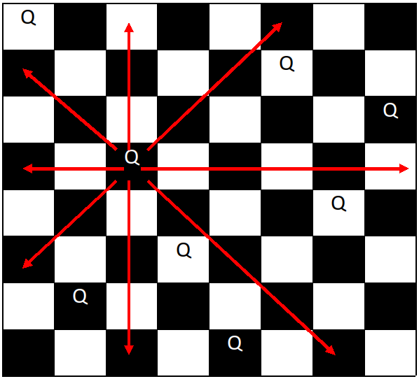

8 Queens
Problem Statement:
Suppose we have a standard chess board, and 8 queens. Find all possible placements of queens such that they do not attack each other.
Note:
- The dimentions of a standard chessboard are 8 by 8.
- One queen can attack another if they are directly vertical, horizontal, or diagonal from one another.

One of many valid placements for 8 queens. Red arrows represents how a queen can attack.
Image taken from CodeStepByStep.com